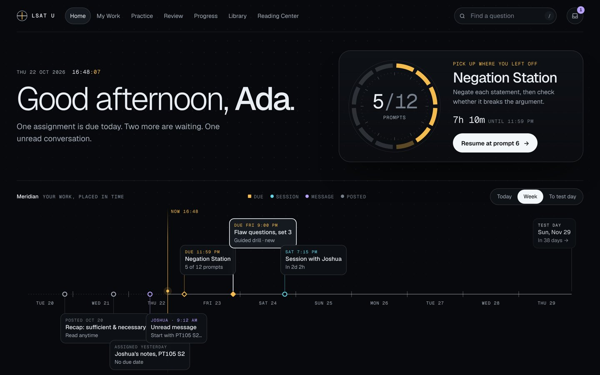
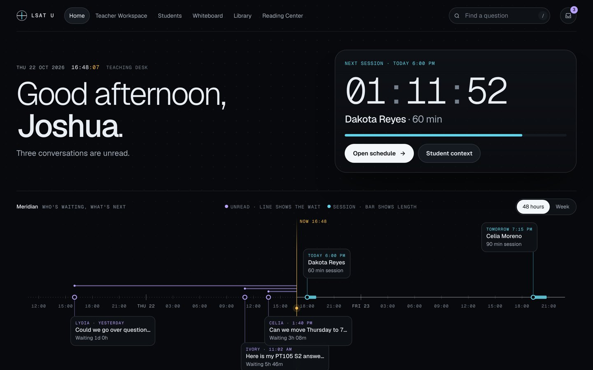
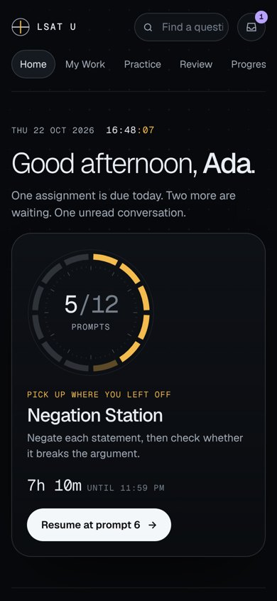
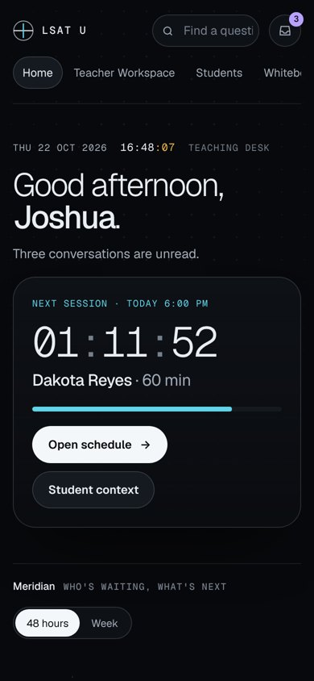

Three directions,
six screens.
Each direction is a complete idea: its own type, color, layout, components and motion, built twice: once for the student (what to do next) and once for Joshua (who's waiting, what's next, who to assign). Every page is a working prototype with sample data and a state switcher in the corner for full, empty, loading and error.
The Brief
Home as the day's front page. Law school runs on reading, so the dashboard reads like a broadsheet: a lead story, a docket, letters, an almanac.
- Composition
- Masthead, ruled columns, a lead story for the one thing that matters, secondary items as a numbered docket.
- Signature details
- Progress set as twelve type slugs being inked. A red proofreader's strike and DONE stamp when work is completed. Dotted leaders in the student index. A running head with the next action that drops in once the masthead scrolls away.
- Motion
- Printing press: rules draw across, headlines rise out of their line boxes, slugs fill one by one.
- Type & color
- Bodoni Moda, Newsreader, IBM Plex Mono. Newsprint, ink, one proof red.


Meridian
Everything is placed where it lives in time. One axis, with now as a live line, replaces separate lists, cards and calendar strips.
- Composition
- A focus instrument on top (a twelve-segment bezel for prompts, a live countdown for the teacher's next session), the Meridian across the page, an inspector and queue below.
- Signature details
- Three scales (Today, Week, To test day) re-plot every item with one tween. For Joshua, each unread message draws a line from when it arrived to now, so the wait is visible; opening it retracts the line. The roster is plotted by last activity. On phones the axis turns vertical and time flows down the screen.
- Motion
- Sweep and settle: the axis draws out from now in both directions, markers lock on, the greeting decodes like an instrument acquiring signal.
- Type & color
- Geist and Geist Mono. Near-black, amber for due, cyan for sessions, violet for messages.




Therefore
The recommendation is presented as an LSAT argument: premises built from real data, the assumption stated, and a conclusion you can act on.
- Composition
- A Swiss grid. Premises left, the conclusion as an ultramarine field right. Then the rest of the work as a chain, givens, the teacher's message as a stimulus, and the week as a table.
- Signature details
- Hover a premise and its evidence lights up in the conclusion. Joshua assigns work by filling in a conditional (IF student AND work THEN open), shown as a formula. Opening a message rewrites the conclusion live ("Clear two replies…").
- Motion
- Compression: Archivo's width axis is the motion. Headlines stretch as they scroll in, conclusions settle from wide to condensed, completed work squeezes and drops out while the chain slides into the gap.
- Type & color
- Archivo variable (width 62 to 125) and JetBrains Mono. Paper, ink, ultramarine, a lime highlighter.


Product truths kept in all six
- Student and teacher homes stay separate. Joshua never sees student homework.
- Mark done removes work by assignment key. Opening or marking a message read clears unread and keeps history. "Clear from Home" hides without marking read.
- Unknown counts show as unknown, never zero. Platform sessions are labeled as not proof of free time.
- Full, empty, loading and error states for every section, with retry.
Verified in a headless browser
- All six at 1440 and 390 wide, no horizontal overflow, no console errors.
- Mark done, mark read, clear, open thread, student search, scale switching, all four states, with and without reduced motion.
- Keyboard: real buttons, links and inputs throughout; arrow keys step through Meridian markers.
Not verified / limits
- Prototypes, not production React. Actions are simulated and logged in the corner dock; nothing persists.
- Fonts load from Google Fonts, so offline viewing falls back to system faces. GSAP 3.12.5 is inlined.
- Not tested with a screen reader or on real phones. Sample clock is fixed at 4:48 pm, Oct 22.